I am social, creative, detail-oriented, and a fast-learner.
I am able to work well in a fast-paced environment, both in a team and alone.
I deal with computer-based work, mainly code and graphical work.
YOUniversity
EECS 3461 - User Interfaces
This piece attempts to create a virtual educational space via virtual reality that is experienced
through the use of a head-mounted display, the Oculus Rift. By modelling the structures of Accolade
West & Goldfarb building of York University our goal was to explore the potential uses for this platform.
We explored concepts such as e-learning, virtual tours and distance education but decided upon using
this project as a promotional tool for prospective students looking to apply to Digital Media at York University.
By showcasing some of the classrooms and labs frequently used by students of the program, we wanted to familiarize prospective students with these facilities and give them a sense of the day-to-day life of a digital media student. However we wanted to maintain an element of potential for virtual education by including ennvironments and scenarios that teach a lesson to the user. We included one such environment which is a virtual walkthrough of a computer motherboard a previously completed project. This world is accessed through a computer within the digital media computer lab and the goal is for future students to continue to build off of this framework and include future work of additional enviornments.
The following is a view of the methodology for developing this project.
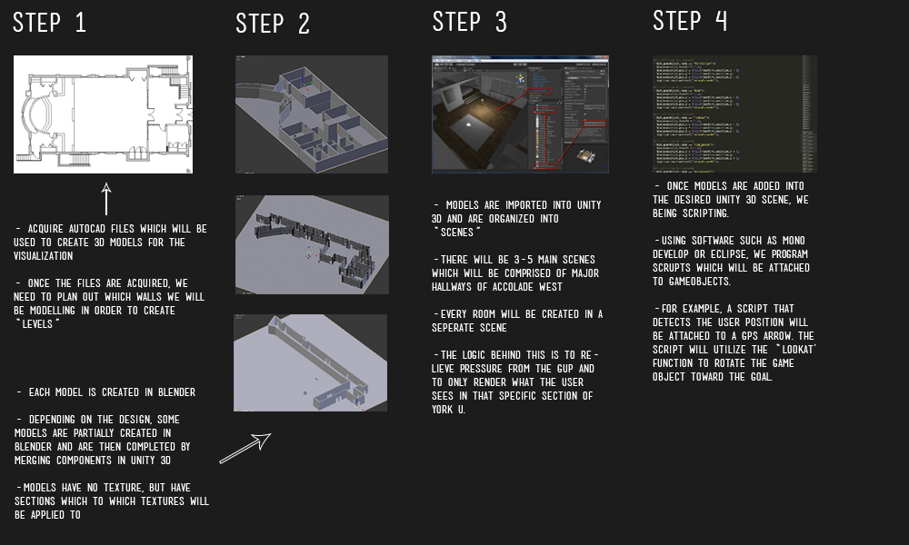
Team: Rohan Likhite, Stedman Tam, Jeff Tuxworth
Date: Sept 2014 - Apr 2015
Virtual PC Walkthrough
EECS 4700 - Capstone Project
This is a virtual reality experience which allows users to walk inside the motherboard of a PC. Users will learn about different computer components by traversing ontop of a computer motherboard. Built to be used with the Oculus Rift virtual reality headset (DK2), it features animation and interaction which stimulates learning
This project was inspired by an episode of The Magic School Bus and thus modelled after.
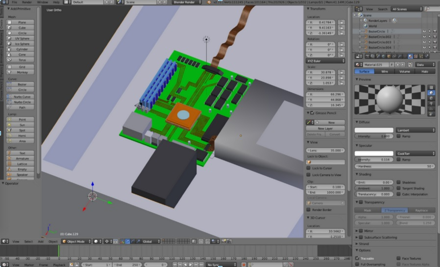
Team: Bashir Durani-Khan, Rohan Likhite, Stedman Tam, Jeff Tuxworth
Date: Dec 2014
Robzzle
EECS 3930 - Screen Based Fluid Interfaces
An Adventure/Puzzle game developed for Android using Processing. Our goal of this project was to create an art game that posed puzzle challenges to the user and explore the world of the inner workings of a mystical robot. We wanted to relate challenges within the different parts of the robot’s body to the topics of the Software Studies Lexicon and create shape them to reflect the topic that it would link to. Each puzzle would have incorporated different touch gestures to solve the challenge with motions that would also reflect the topics. The design of the world would appear mostly as silhouettes with the main character and the foreground background appearing in black while coloured backgrounds would add depth to the appearance of the rooms.
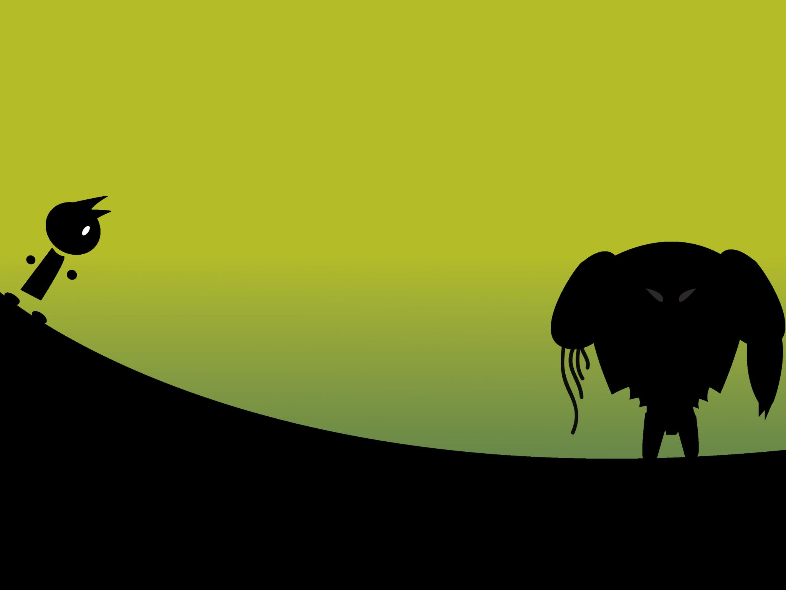
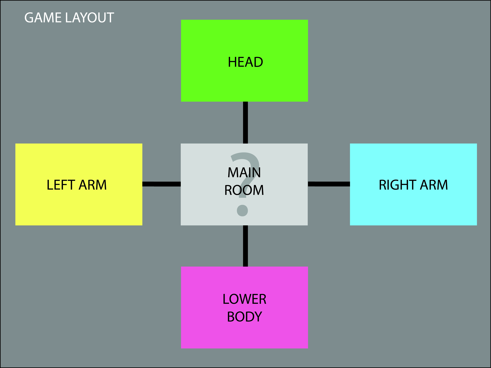
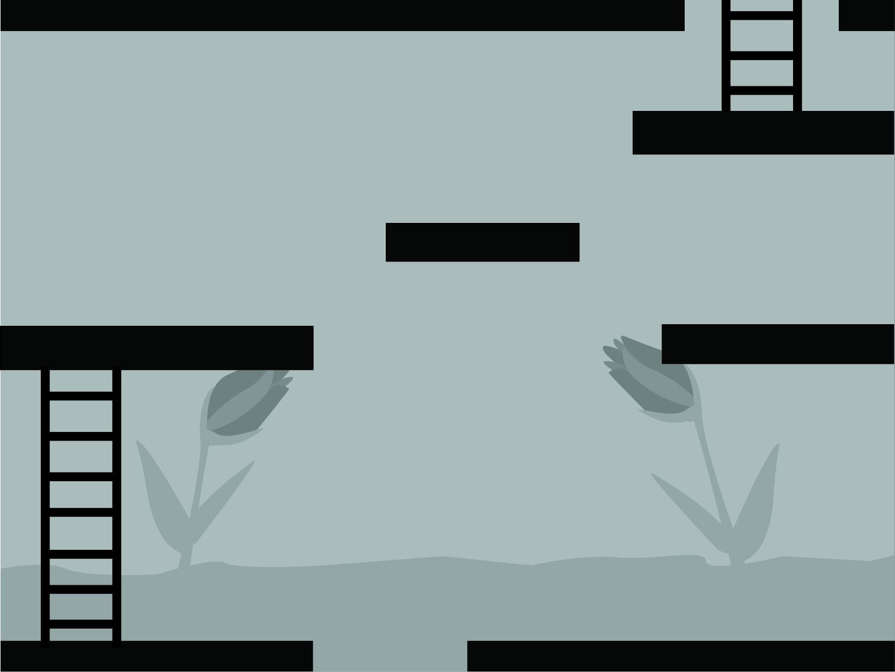
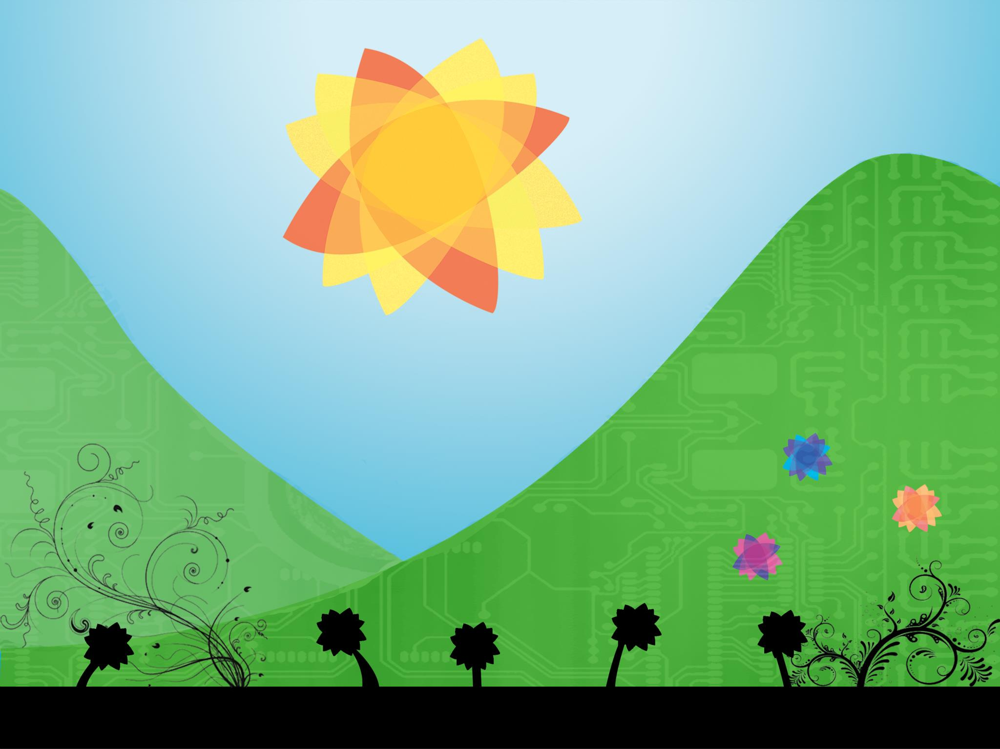
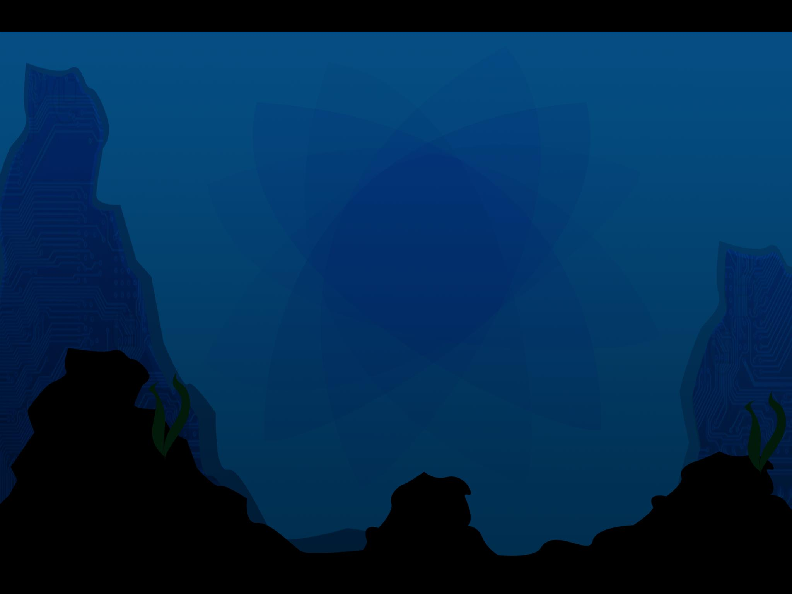
Team: Nicholas Ferrente, Mauri Galvez, Stedman Tam
Date: Dec 2013
Firefly: MF-813 Flying Mule
DATT 3940 - Modelling for 3D Fabrication
Created in Google Sketchup, this model is a recreation of the MF-813 Flying Mule featured in the cult-classic sci-fi show "FireFly".
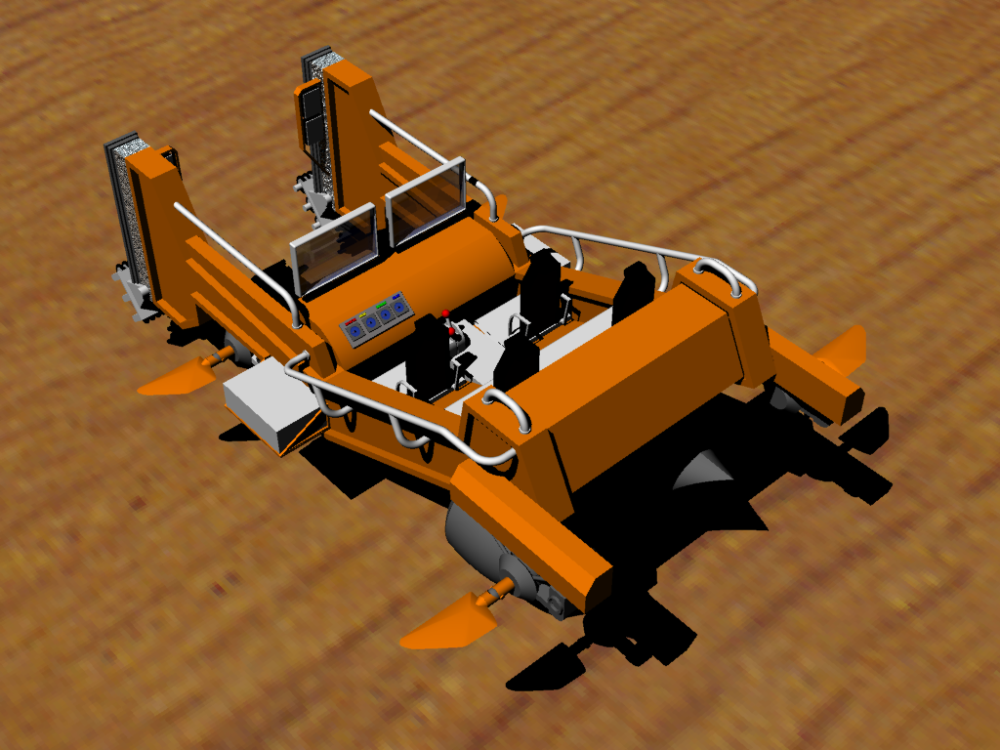
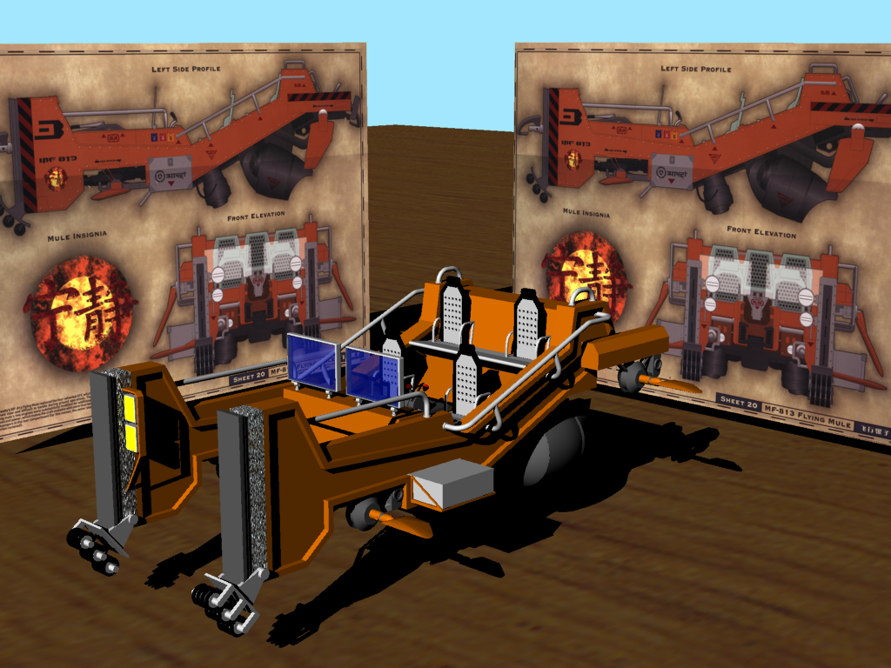
Date: Dec 2014
Keron: PMD-02
FACS 2930 - The Electronic Landscape
Created in 3Ds Max and Photoshop. The Keron: PMD-02 is a mock-up of a fictional concept chair. The theme behind this idea was to explore the relationship between technology and the human body and specifically chair ergonomics. I was inspired by the exploration of healthy living and lifestyle when using technology and sought out ways to improve my own habits and how to inform others.
Date: Dec 2011
Remix - Assignment
FACS 2930 - The Electronic Landscape
Created in Photoshop. This remix assignment explored the theme of the New Aesthetic. Inspired by early video games I chose to use Mario Kart sprites for the Super Nintendo to be belended into landscape images to imagine the digital and reality blurring together.
Grow & Grow is a micro-press based in Toronto, run by Jessica Bebenek, with a focus on emerging writers handcrafted poetry chapbooks, and ethical production..
So the basis of this idea stemmed from trying to wrap my head around a way to make connections to other websites with my project. I really wanted to think of an idea that would put an emphasis on networks and make engaging connections to other websites. What came out of my mind was just a random thought that came up of, “What about a website selling other websites?”. I thought it would be a clever way to create a sort of parody of a mainstream retail website like amazon or a major retail chain and then put for sale other websites to create a sort of network between sites. Web domains are not typically something sold amongst the general public but we have seen the sale of major traffic sites like Myspace and YouTube in the last few years that have received high profile purchases by large companies. While the distribution of websites is unlikely to develop into the way retail stores sells merchandise, the idea seemed feasible to create and interesting enough to pursue.
For the design of my project, I’m planing to create a website that most likely will closely resemble a well known online-shopping website like amazon or any other sort of online store that presents a layout recreate able. The main page will present all the options that any online store will usually have but I will probably only have two other functioning links that will fulfill the design layout requirements. One possible layout will be for the profile pages of the of the website like when you look at a product information on an online store. A second could be for the listing of the sites available much like browsing within a category or a filtered list on a shopping store. Other possible pages like profiles, deals, help sections could be explored to offer more choices for different page layouts. There is also advertisement pages or re-creating the webpages being sold to be possible pages to use. I’m planning to arrange pages to be sold into some similar categories an online store would but also to something more unique to the web like blogs.


 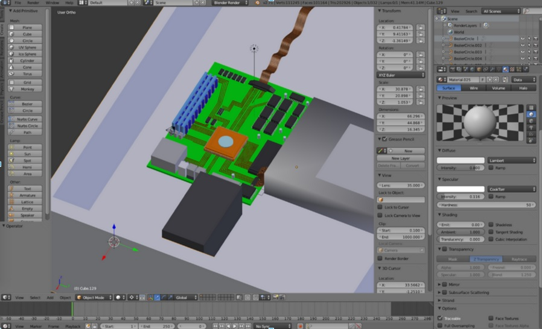
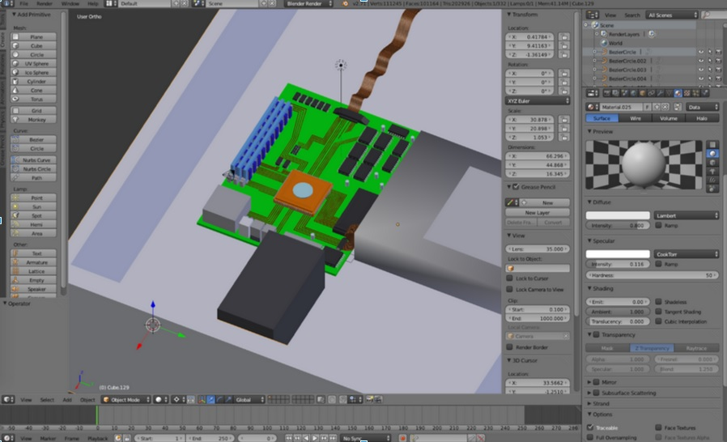